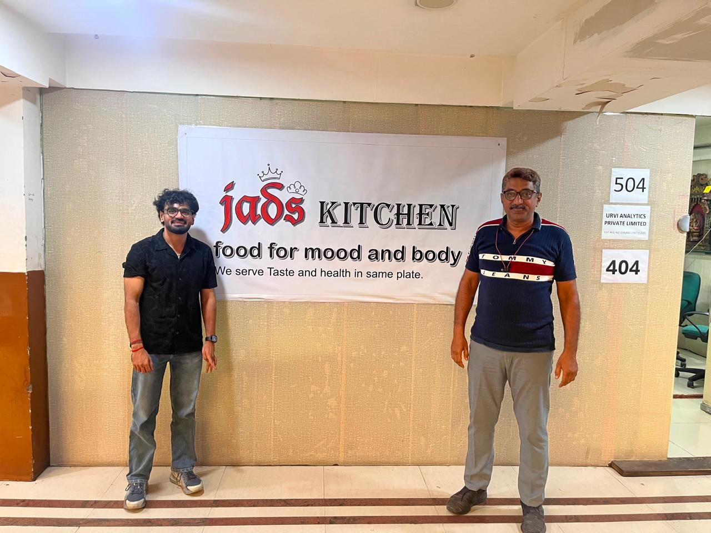
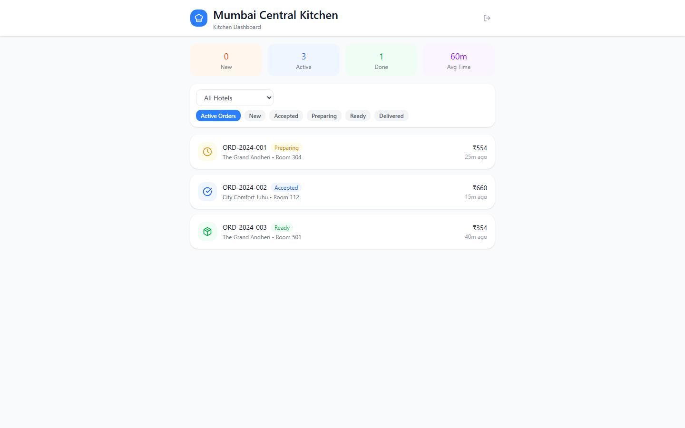
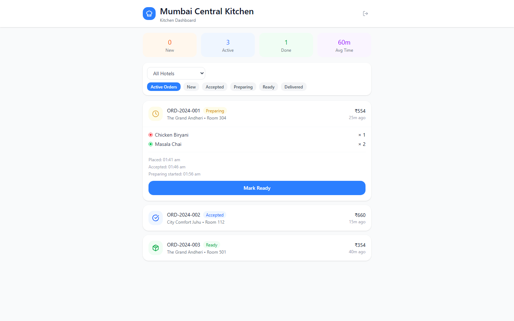
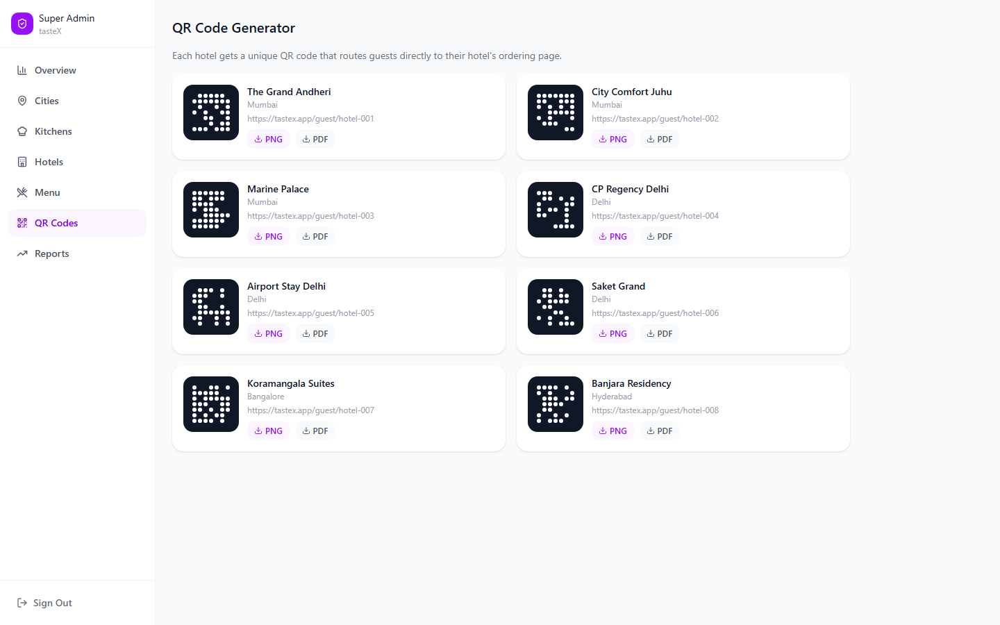
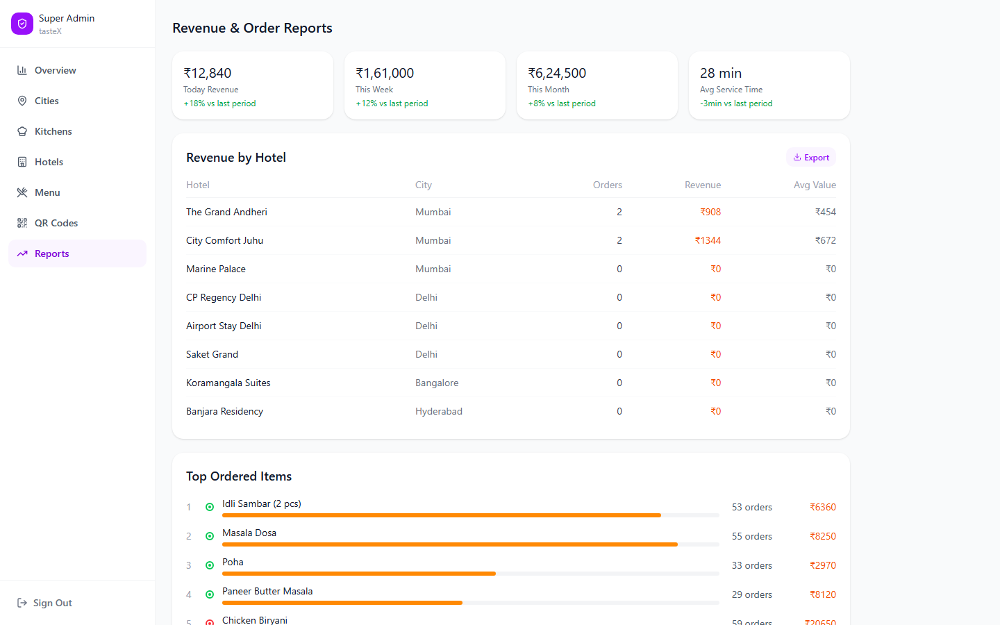

About the project
tasteX is room service without the in-house kitchen. Instead of each hotel running its own, a single central kitchen fulfils orders for several partner hotels in a city. Guests scan a QR code in their room, and the order is routed to whichever kitchen is mapped to that property.
I designed the whole system end to end: the guest ordering experience, the kitchen staff’s order dashboard and the super-admin panel that runs cities, kitchens, hotels and menus, plus the brand and design system tying all three together.
The work started on site. I spent time at the client’s cloud kitchen with the operator and the kitchen team, because the product had to fit how the operation already ran, not the other way round.



The problem
Boutique and mid-size hotels couldn’t justify a full kitchen, but guests still expected room service.
A central kitchen had to route orders from many properties without anyone losing track of who ordered what, or how it was being fulfilled.

Those conversations boiled the problem down to what the system had to reconcile:
- No affordable way for smaller hotels to run their own room-service kitchen.
- One central kitchen reliably serving multiple hotels in the same city.
- Guests never needing to know, or care, which kitchen was cooking.
- Kitchen staff managing incoming orders without training overhead.
- One point of control over pricing, menus and reporting across every city.
That meant three very different users on three different devices: a guest ordering from their room, kitchen staff managing a live queue, and a super admin running the operation. That split shaped everything else.
Three portals, one system
| Portal | Device | Core job |
|---|---|---|
| Guest | Mobile-first (375px+) | Hotel guests order food from their room |
| Kitchen | Desktop (1024px+) | Kitchen staff accept, prepare and fulfil orders |
| Admin | Desktop (1280px+) | A super admin manages cities, kitchens, hotels, menus, pricing and reporting |
Guest flow, at a glance
- Scan
- Verify
- Browse
- Pay
- Track
The guest flow is deliberately linear, with no back-tracking once verification starts. A QR scan (with a manual hotel-and-room fallback), OTP verification every session since no login persists, a menu filtered by veg/non-veg, a prepaid-only cart with a full GST breakdown, and a confirmation screen. Order ID, ETA and kitchen routing are all handled invisibly.
I took it through two fidelity stages: structural wireframes to lock the flow logic, then a fully branded build with realistic menu content, live-feeling payment states and a demo mode that simulates the QR scan.


Kitchen: a queue you can glance at between orders

Standing at the station made the brief obvious. The cook’s hands are busy, the stove is on and orders keep arriving, so the screen gets a glance, not attention.
Kitchen staff needed something to check between orders, not a dashboard that needs training. The screen leads with counts (New, Active, Done, average service time), then a list filterable by hotel and stage. Each order expands to its items and one action button that advances it: Accept, Start preparing, Mark ready, Mark delivered. A live badge calls out anything unaccepted.
Deliberately absent: pricing and revenue. Staff see what they need to cook and route, nothing else.




Admin: central control, no local overrides
The admin panel is the operational backbone: six tabs (Cities, Kitchens, Hotels, Menu, QR Codes, Reports) under one hard rule. Pricing is centrally controlled and propagates to every city, so no hotel or kitchen can quietly override a price. Each hotel maps to exactly one kitchen, and QR codes are generated per hotel with PNG and PDF export for printing.





One design system under three portals
Rather than three separate products, I built one shared design system underneath all of them.
- Brand. Always “tasteX” (never TasteX or Tastex), with the tagline “Room to Order.”: direct, warm, reliable.
- Colour. Orange reserved for primary actions and prices, semantic colours for order states, and a distinct accent only for the admin portal to separate operator surfaces from guest ones. 12 colour tokens in all.
- Typography. Plus Jakarta Sans for display, Inter for body and UI.
- Spacing. A 4px base unit, from icon gaps to section margins.
- Components. A documented, versioned library of buttons, fields, badges, cards and a dedicated OTP input.
- Primary
- Ready
- Preparing
- Non-veg
- Admin
- Kitchen
Encoding the rules into the design

The system runs on a few non-negotiable business rules, so I documented them as design principles with a “don’t” list. Treating them as design constraints, not just backend rules, meant the UI made wrong actions structurally unavailable instead of relying on staff to remember.
Principles
- Prepaid checkout only
- OTP re-verification every session
- One kitchen per hotel
- Pricing set centrally, everywhere
Structurally unavailable
- Postpaid or cash on delivery
- OTP bypass
- Local price overrides
- Splitting a hotel across kitchens
- Kitchen identity or revenue shown to the wrong role
Explore the guest ordering flow
The prototype below is walkable end to end, from QR scan to order confirmation.
Open full screen in Figma ↗This file predates the tasteX rebrand, so its header and admin sidebar still read “RoomServe”. The flows and screens are otherwise current.
Key decisions
Simplicity for one user often meant complexity somewhere else.
These product decisions shaped the final product more than the UI itself. They worked within a fixed set of constraints:
- Hotels cannot override pricing, and admin changes propagate to every city.
- One hotel maps to exactly one kitchen.
- No cash on delivery.
- QR codes must uniquely identify both hotel and room.
- Neither guests nor staff should need any training.
1. Local pricing vs. central pricing
Initial idea: let every hotel maintain its own menu and pricing. Once hotels shared a kitchen, two of them could sell the same dish at different prices, confusing operations and breaking reporting.
What changed: pricing became centrally managed, and hotels inherit menus. The result was a consistent guest experience, reliable reporting and easier operations.
2. Should guests know which kitchen cooks their food?
Initial idea: show the assigned kitchen for transparency. Workflow mapping showed guests didn’t care about the operational structure; they just wanted food at the right room.
Decision: guests interact only with the hotel, and routing happens behind the scenes. Cleaner, lower cognitive load, and hotels keep the guest relationship.
3. Persistent login vs. OTP every session
Initial idea: a traditional guest login. But room occupancy changes often, and a persistent session could let the next guest see someone else’s order history.
Decision: every session starts with OTP verification. Better privacy, fewer support issues, a safer experience.
4. Kitchen dashboard vs. kitchen queue
Initial idea: early concepts showed pricing, reports and analytics. Kitchen staff didn’t need business intelligence. They needed to know what to cook next.
Decision: a simple queue of status, order details and the next action; everything else removed. Faster onboarding, less noise, better focus.
5. QR scanning only?
Initial idea: assume every guest scans successfully. Real rooms have damaged stickers, poor lighting and camera issues.
Decision: a manual hotel-and-room fallback. QR stays the fastest, primary path, and no guest is ever blocked from ordering.
What changed during design
The design evolved through testing and stakeholder feedback, reviewed with the operator page by page.

Kitchen dashboard
| Version 1 | Version 2 (shipped) |
|---|---|
| Heavy dashboard: charts, graphs, analytics | Status cards, an order queue and one call to action |
| Kitchen staff ignored most of it | Faster onboarding, better operational focus |
Guest checkout
- Cart
- Payment
- Success
Testing showed guests still wondered whether the order had reached the kitchen, so we added live tracking:
- Cart
- Payment
- Live tracking
- Delivered
Admin navigation
- Hotels
- Cities
- Menus
- Kitchen
Stakeholders found this confusing because their work starts with cities, not hotels. Navigation was reorganized around how they actually run the business:
- Cities
- Kitchens
- Hotels
- Menu
Built with an AI-orchestrated pipeline
A deliberate experiment in how far AI can go when it’s directed across the entire build.
- Design, with Figma Make: turning wireframes into working prototypes across all three portals.
- Code, with Codex: generating the front-end from the design system and component specs instead of building screen by screen.
- Deployment, with Claude Code: setting up the CI/CD pipeline from local build to the UAT environment.
My role was direction, review and integration: giving each tool the right context (design system rules, business logic like prepaid-only and one kitchen per hotel), checking output against the real requirements, and stitching it into one coherent product rather than three disconnected AI outputs.
A project of this scope would traditionally take around a year. Directed well, the pipeline brought it to UAT in under 5 months, without cutting corners on the design system or the business logic.
Outcome: in UAT, ahead of rollout
tasteX is deployed in a test environment across the guest, kitchen and admin portals. UAT is in progress and a production rollout date hasn’t been set yet. Stakeholder feedback so far centres on three things:
- Order visibility. The status-driven queue shows kitchen staff what’s pending, cooking and ready at a glance.
- Operational reporting. Admin reports are used for monthly reporting, and stakeholders have started using them for inventory tracking too.
- Simpler ordering. The QR code encodes hotel and room, so guests never have to identify either.
These reflect stakeholder feedback during testing, not post-launch analytics.
Reflections
The biggest challenge wasn’t designing three interfaces. It was designing one product that behaved consistently for three completely different users. Decisions about permissions, business rules, ownership and operational simplicity shaped the experience far more than visual design alone.